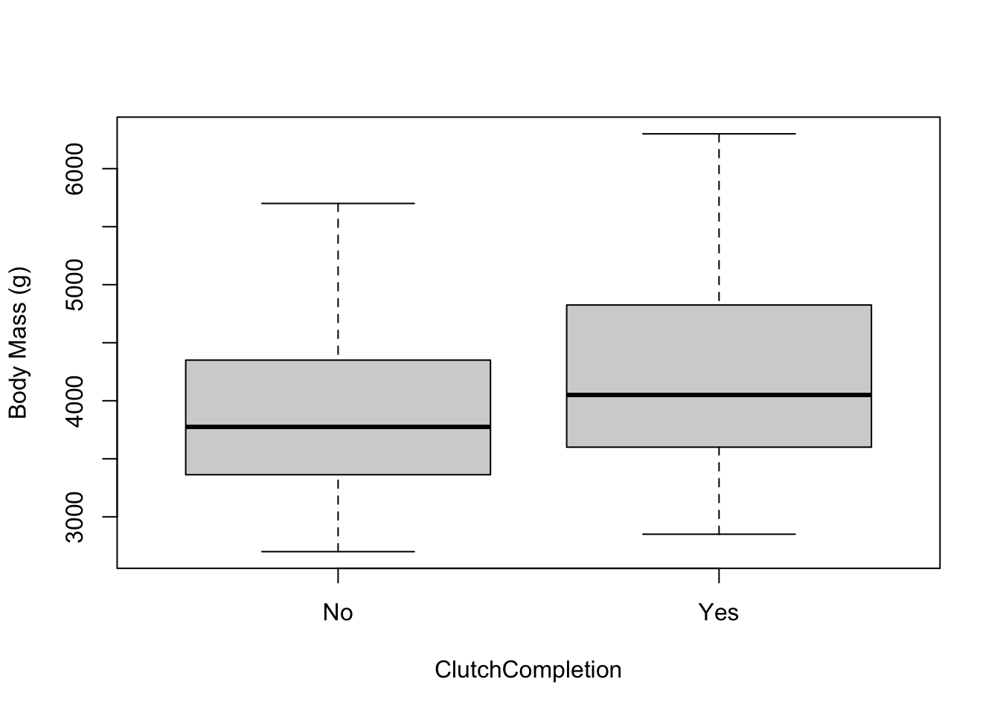
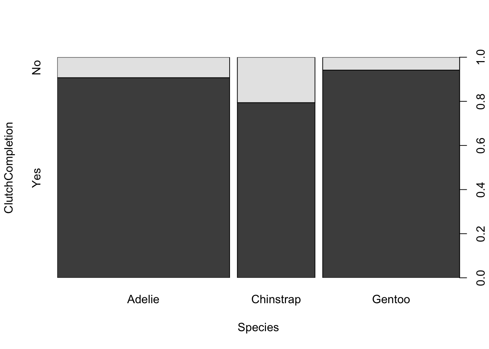
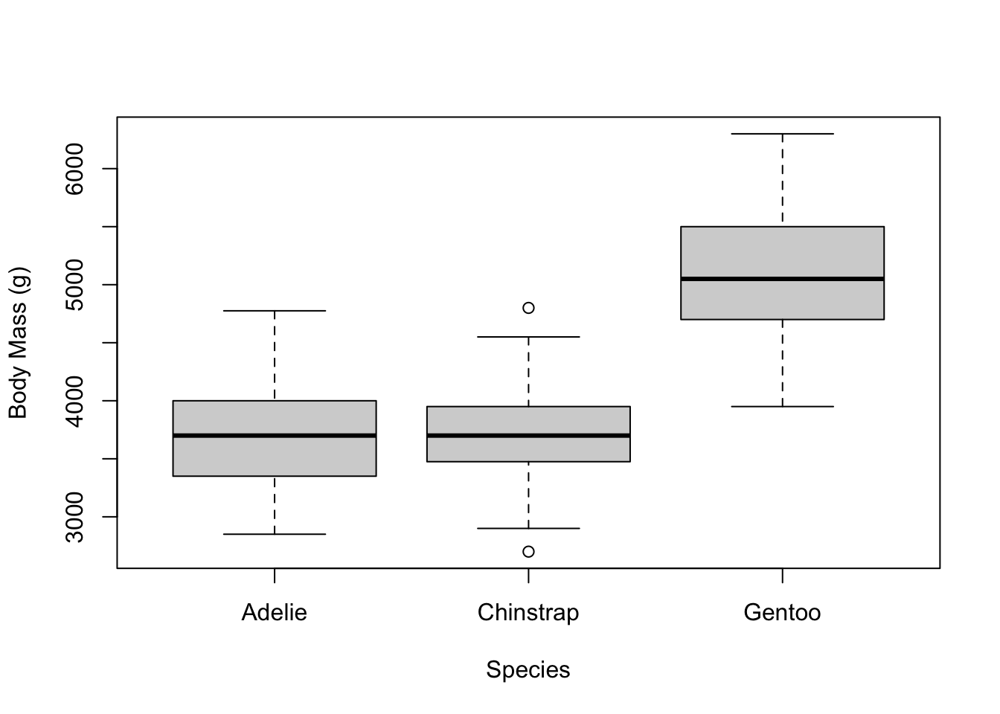
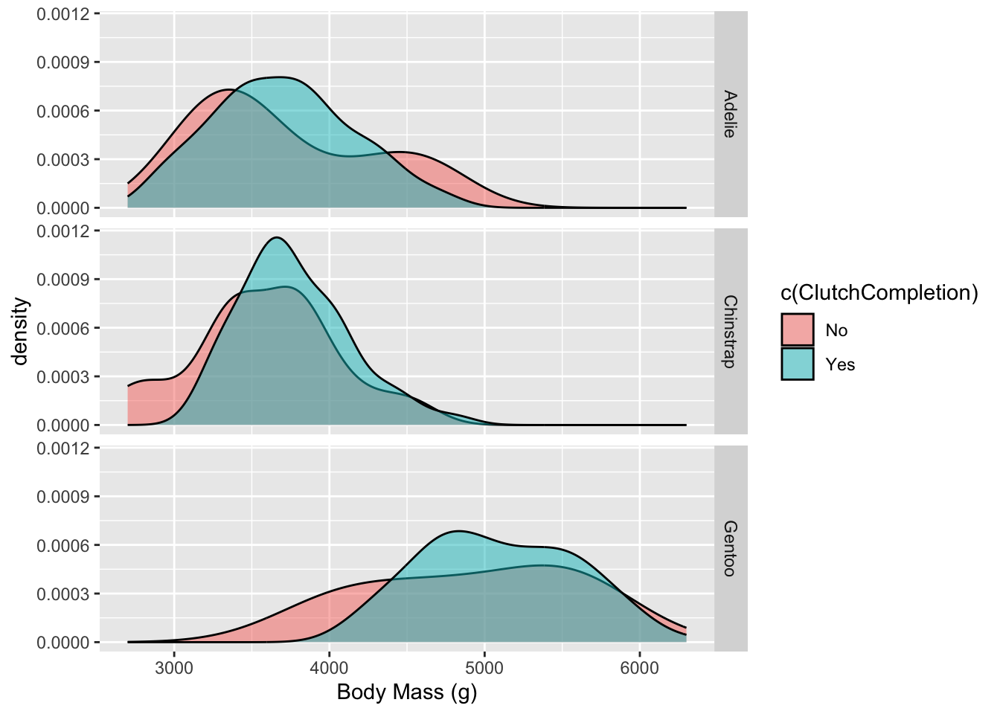

knitr::read_chunk('statistical_analysis.R')Analysis script
This Quarto file loads the cleaned Palmer Penguins data and does some initial analysis. I find this step very helpful for seeing what results you have to work with for your talk or paper/final report.
Some of what is written below is for you. I would like you to modify this quarto file to produce a document customized for your analysis and written to explain your thinking in your data analysis so feel free to modify as much as you wish.
It is worth taking a minute to reflect on where we are in the data analysis workflow. The purpose of the previous processing document was to document data cleaning and processing in preparation for analysis. You saw that as part of the cleaning and processing step, we already had to explore the data somewhat to understand how to clean it. In general, as you explore, you find more things that need cleaning. As you clean, you find more to explore.
The need to document your workflow
Although we broke our workflow in this project into cleaning and analysis steps, depending on your project, it may be more logical to divide the scripts in other ways. The organization should naturally reflect the workflow.
In rather clean datasets at times it might make more sense to combine the cleaning and exploring code parts into a single R or Quarto file. But if you do have real errors to fix, you will want to carefully document cleaning steps, and probably not redo the cleaning each time you want to get a bit further on your data exploration and analysis. Itʻs a lot of baggage to carry around and also errors might creep in if you are keeping code in your script that you are not actively working on.
When there are natural breaks in the workflow (i.e., when you close the door on cleaning or on a first analysis), it can be a good idea to have start a new script because once you clean your data, you will have a new starting point for all of your downstream analyses (and not look back at the really raw data, unless you want to change your mind about some of the cleaning - thus the need for keeping an original raw data file and documenting all the steps).
This can also come up when you have a multi-stage analysis. In very complex analyses, it can make a lot of sense to have separate scripts for major analyses or workflow steps. As always, use your jugement, and be intentional about your organization. Clean organization = clear thinking.
Analysis
If you did a good job in the previous step, you should have a pretty good idea of the structure of the data.
For this part of the project, develop three questions and use your R skills to answer them. Begin by producing a summary table of the data that could be included in a future paper. You should produce plots or tables and/or statistics or model fits to address your questions.
Setup
Load the R script to begin analysis.
Require packages and filepaths.
#load needed packages. make sure they are installed.
require(ggplot2) #for plotting
require(magrittr) #for piping
require(knitr) #for formatting output
#path to data and results
data_path <- "../../Data/Processed_data/"
results_path <- "../../Results/"Load custom function which pastes the path to the output files.
# function to paste path to output filenames
addpath <- function( filename, path=data_path ) {
location <- paste( path, filename, sep="")
return( location )
}Load in the processed data from Project1 as a .rds file
# load data.
dat <- readRDS( addpath("processeddata.rds", data_path) )Creating a summary table
In order to present the reader or listener with an overview of the data in a digestible way, a summary table must be created. This includes sample size (N) for all variables and additional basic statsistics (counts, means, and standard errors) for continuous data.
I used skimr to produce a summary tibble and then coerced it into a data frame. Then I looked at the variables automatically generated to see which elements to include or ignore. I added a column for “N” by counting the number of rows and subtracting the number of missing values to find out how many samples each variable has.
# create summary table of the data using skimr to use in paper
# variables, sample size, mean, standard error
sk <- skimr::skim(dat) # save skim object
sk <- as.data.frame(sk) # save as data.frame
head(sk) # see the variable names skim_type skim_variable n_missing complete_rate character.min
1 character Region 0 1.0000000 6
2 character Individual ID 0 1.0000000 4
3 character Clutch Completion 0 1.0000000 2
4 character Date Egg 0 1.0000000 10
5 character Comments 287 0.1533923 25
6 factor Species 0 1.0000000 NA
character.max character.empty character.n_unique character.whitespace
1 6 0 1 0
2 6 0 190 0
3 3 0 2 0
4 10 0 50 0
5 68 0 8 0
6 NA NA NA NA
factor.ordered factor.n_unique factor.top_counts numeric.mean
1 NA NA <NA> NA
2 NA NA <NA> NA
3 NA NA <NA> NA
4 NA NA <NA> NA
5 NA NA <NA> NA
6 FALSE 3 Ade: 151, Gen: 120, Chi: 68 NA
numeric.sd numeric.p0 numeric.p25 numeric.p50 numeric.p75 numeric.p100
1 NA NA NA NA NA NA
2 NA NA NA NA NA NA
3 NA NA NA NA NA NA
4 NA NA NA NA NA NA
5 NA NA NA NA NA NA
6 NA NA NA NA NA NA
numeric.hist
1 <NA>
2 <NA>
3 <NA>
4 <NA>
5 <NA>
6 <NA>nrows <- dim(dat)[1] # total number of rows
sk$N <- nrows - sk$n_missing # sample size of each variableSelect columns for a final summary table
I grabbed only the columns of interest (variable name, N, mean, SD, and counts) and changed SD to SE by dividing by the square root of the sample size.
I changed the names to be nicer than the skim output and set the number of digits per entry to 2.
# select only the variable, N, mean, sd, and category counts
sk.table <- sk[c("skim_variable", "N", "numeric.mean", "numeric.sd", "factor.top_counts")]
names(sk.table) <- c("Variable", "N", "Mean", "SE", "Counts") # rename SD as SE
sk.table$SE <- sk.table$SE/sqrt(sk.table$N) # calculate SE
options(knitr.kable.NA = "")
knitr::kable(sk.table, digits=2)| Variable | N | Mean | SE | Counts |
|---|---|---|---|---|
| Region | 339 | |||
| Individual ID | 339 | |||
| Clutch Completion | 339 | |||
| Date Egg | 339 | |||
| Comments | 52 | |||
| Species | 339 | Ade: 151, Gen: 120, Chi: 68 | ||
| Island | 339 | Bis: 164, Dre: 124, Tor: 51 | ||
| Sex | 330 | MAL: 168, FEM: 162 | ||
| Sample Number | 339 | 63.13 | 2.19 | |
| Culmen Length (mm) | 339 | 43.90 | 0.30 | |
| Culmen Depth (mm) | 339 | 17.17 | 0.11 | |
| Flipper Length (mm) | 339 | 200.79 | 0.76 | |
| Body Mass (g) | 339 | 4196.17 | 43.62 | |
| Delta 15 N (o/oo) | 327 | 8.74 | 0.03 | |
| Delta 13 C (o/oo) | 328 | -25.68 | 0.04 |
# save summary table
saveRDS(sk.table, file = addpath("summary_table.rds", results_path))This is saved as an .rds file.
How to complete a clutch?
I have an idea that clutch completion (observation of a nest with full clutch, i.e., 2 eggs) can tell us about fitness of individuals. Let’s find out what factors are assosciated with clutch completion.
Do more massive penguins have more clutch success?
dat$ClutchCompletion <- as.factor(dat$"Clutch Completion")
# plot to screen
with(dat, plot(`Body Mass (g)` ~ ClutchCompletion))
# plot to .png file, can also do pdf using `pdf()` function
png(filename = addpath("mass_clutch_bars.png", results_path))
with(dat, plot(`Body Mass (g)` ~ ClutchCompletion))
dev.off()quartz_off_screen
2 # create plot and send to screen
p <- dat %>% # mass density by CC
ggplot( aes(x=`Body Mass (g)`)) +
geom_density( aes(fill=ClutchCompletion), alpha=.5)
p
# save ggplot objects using `ggsave()`
ggsave(filename = addpath("mass_clutch_density.png", results_path), plot=p) Saving 7 x 5 in imageIt seems those with successful clutches may have slightly higher mass. Let’s do a t-test to see if this is significant.
ttest <- with(dat, t.test(`Body Mass (g)` ~ ClutchCompletion))
ttest
Welch Two Sample t-test
data: Body Mass (g) by ClutchCompletion
t = -2.4608, df = 43.553, p-value = 0.0179
alternative hypothesis: true difference in means between group No and group Yes is not equal to 0
95 percent confidence interval:
-602.26949 -59.84987
sample estimates:
mean in group No mean in group Yes
3899.286 4230.345 saveRDS(ttest, file = addpath("mass_clutch_ttest.rds", results_path))And it is! Good to know
Now, which species have more clutch completion?
#make ClutchCompletion variable categorical
dat$ClutchCompletion <- as.factor(dat$"Clutch Completion")
# plot to screen
with(dat, plot(ClutchCompletion ~ Species))
# plot to .png file, can also do pdf using `pdf()` function
png(filename = addpath("species_clutch_bars.png", results_path))
with(dat, plot(ClutchCompletion ~ Species))
dev.off()quartz_off_screen
2 It looks like Gentoo is most successful followed by Adelie with Chinstrap having least completion. Let’s see if this is significant with ANOVA. I am converting the clutch completion (yes/no) variable to binary so it has a numerical representation in this test.
#make clutch completion binary
dat$CC <-ifelse(dat$ClutchCompletion=="Yes",1,0)
head(dat) Sample Number Species Region Island Individual ID Clutch Completion
1 1 Adelie Anvers Torgersen N1A1 Yes
2 2 Adelie Anvers Torgersen N1A2 Yes
3 3 Adelie Anvers Torgersen N2A1 Yes
5 5 Adelie Anvers Torgersen N3A1 Yes
6 6 Adelie Anvers Torgersen N3A2 Yes
7 7 Adelie Anvers Torgersen N4A1 No
Date Egg Culmen Length (mm) Culmen Depth (mm) Flipper Length (mm)
1 2007-11-11 39.1 18.7 181
2 2007-11-11 39.5 17.4 186
3 2007-11-16 40.3 18.0 195
5 2007-11-16 36.7 19.3 193
6 2007-11-16 39.3 20.6 190
7 2007-11-15 38.9 17.8 181
Body Mass (g) Sex Delta 15 N (o/oo) Delta 13 C (o/oo)
1 3750 MALE NA NA
2 3800 FEMALE 8.94956 -24.69454
3 3250 FEMALE 8.36821 -25.33302
5 3450 FEMALE 8.76651 -25.32426
6 3650 MALE 8.66496 -25.29805
7 3625 FEMALE 9.18718 -25.21799
Comments ClutchCompletion CC
1 Not enough blood for isotopes. Yes 1
2 <NA> Yes 1
3 <NA> Yes 1
5 <NA> Yes 1
6 <NA> Yes 1
7 Nest never observed with full clutch. No 0lm.fit.c <- lm(`CC` ~ Species, dat)
anova.table.c <- anova(lm.fit.c)
# print to screen the anova table
print(anova.table.c)Analysis of Variance Table
Response: CC
Df Sum Sq Mean Sq F value Pr(>F)
Species 2 0.9751 0.48757 5.3869 0.00498 **
Residuals 336 30.4113 0.09051
---
Signif. codes: 0 '***' 0.001 '**' 0.01 '*' 0.05 '.' 0.1 ' ' 1# save anova table to file in Results folder
saveRDS(anova.table.c, file = addpath("cc_species_anova.rds", results_path))So they do have different amounts of complete clutches
But we know mass has an effect on clutch completion. Let’s see if the species have different masses.
# plot to screen
with(dat, plot(`Body Mass (g)` ~ Species))
# plot to .png file, can also do pdf using `pdf()` function
png(filename = addpath("mass_species_bars.png", results_path))
with(dat, plot(`Body Mass (g)` ~ Species))
dev.off()quartz_off_screen
2 And let’s see if it’s significant with ANOVA
# fit linear model using mass as outcome, species as predictor
lm.fit.s <- lm(`Body Mass (g)` ~ Species, dat)
anova.table.s <- anova(lm.fit.s)
# print to screen the anova table
print(anova.table.s)Analysis of Variance Table
Response: Body Mass (g)
Df Sum Sq Mean Sq F value Pr(>F)
Species 2 145838050 72919025 339.27 < 2.2e-16 ***
Residuals 336 72215714 214928
---
Signif. codes: 0 '***' 0.001 '**' 0.01 '*' 0.05 '.' 0.1 ' ' 1# save anova table to file in Results folder
saveRDS(anova.table.s, file = addpath("mass_species_anova.rds", results_path))And it is again.
So those with successful clutches have higher masses and species have different levels of clutch completion … but species have different masses. This means that by lumping all the species together when looking at mass, we may be missing the big picture of the effect of mass on clutch completion within each species.
Let’s see a density plot of clutch success by mass with species as a facet.
# create plot, subseted by clutch completion and faceted by species
q <- dat %>% # CC by species
ggplot( aes(x=`Body Mass (g)`)) +
geom_density( aes(fill=c(ClutchCompletion)), alpha=.5) +
facet_grid(Species ~ .)
q
ggsave(filename = addpath("mass_species_clutchcompletion.png", results_path), plot=q) Saving 7 x 5 in imageNow we can see that while more massive Gentoos and Chinstraps have more complete clutches, mid-sized Adelies are actually more likely to have complete clutches. They actually have less success at higher masses. This is an interesting pattern about mass and reproductive fitness across species which we wouldn’t have seen if it weren’t for breaking down this distinction.